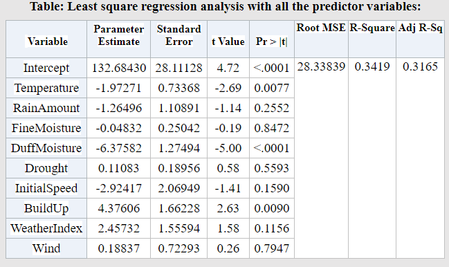
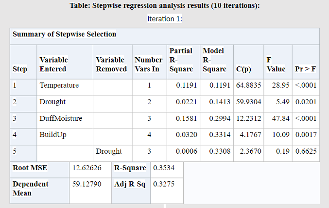
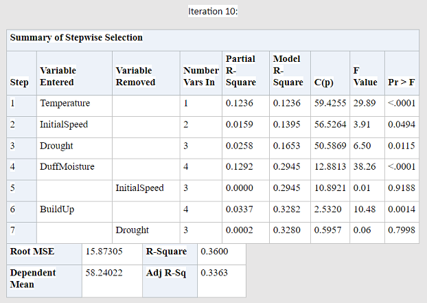
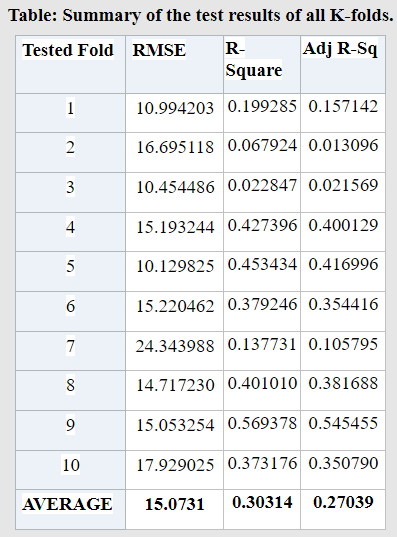

Stepwise Regression Analysis on Probability of Forest Fire
Project Description:
The relationships between the 'Probability of Forest Fire' in Algeria and its various weather components have been estimated. Stepwise Linear Regression has been
performed for this purpose and K-fold Cross Validation (K=10) has been carried out to evaluate the performance of the model.
SAS has been used for the regression and validation. Prior to that, Python was used for data cleaning.
Data Introduction: The dataset includes 2,243 records of weather components' data.
|
1. Date: (DD/MM/YYYY) Day, month, and year. 2. Temperature: Temperature at noon (temperature max) in Celsius degrees: 22 to 42. 3. Wind: Wind speed in km/h: 6 to 29. 4. RainAmount: Total rain on that day in mm: 0 to 16.8. 5. FineMoisture: Fine Fuel Moisture Code (FFMC) index: 28.6 to 92.5. 6. DuffMoisture: Duff Moisture Code (DMC) index: 1.1 to 65.9. |
7. Drought: Drought Code (DC) index: 7 to 220.4. 8. InitialSpeed: Initial Speed Index (ISI) of the fire: 0 to 18.5. 9. BuildUp: Buildup Index (BUI) index: 1.1 to 68. 10. WeatherIndex: Fire Weather Index: 0 to 31.1. 11. FireProb: The probability percentage of the occurrence of forest fire: 0 to 100. |
|

|
|

|

|
|

|